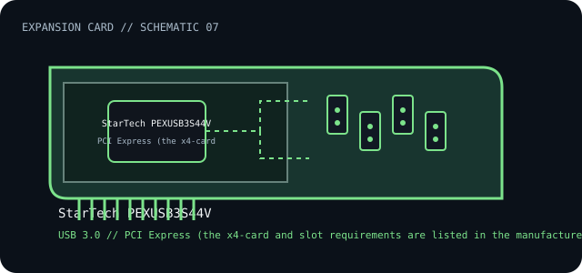

[ INDIVIDUAL COMPONENT // EXPANSION CARDS ]
StarTech PEXUSB3S44V
Four-port PCI Express USB 3.0 card with independent 5-Gbps channels and auxiliary power input. This is a model-specific catalog entry; confirm the exact label and revision before use.

IDENTIFICATION: Match the full model/part number and board revision to the label. Port and bus information below is included only where the linked manufacturer or standards documentation supports it; revisions and platform support may differ.
Specifications and service checks
| Catalog subcategory | USB and FireWire controllers |
|---|---|
| Exact model / part identifier | PEXUSB3S44V |
| Bus / host interface | PCI Express x4; manufacturer requires an available x4-or-greater slot. |
| Verified interfaces / protocols | Four USB 3.0 / USB 3.2 Gen 1 ports, each rated 5 Gbps (20 Gbps total channel rate by StarTech specifications). Auxiliary power may be needed for high-power devices. |
| OS / driver / firmware caveat | Use OS-specific StarTech downloads where required; supported OS versions depend on the driver package. Confirm card lane/slot compatibility and provide auxiliary power when the connected load requires it—USB enumeration alone does not prove high-load stability. |
| Service note | Before servicing, record the PEXUSB3S44V MPN, bracket type, and auxiliary power connector. Use a correctly rated SATA or LP4 lead and verify power-supply capacity before connecting bus-powered peripherals. |
Installation and archival notes
- Record the board model, revision, serial/date code, firmware, bracket, accessories, and the documentation revision used to identify the unit.
- Confirm the host slot's electrical wiring/keying, required power, supported OS/driver, and any platform or option-ROM restriction in the cited model documentation.
- Use ESD precautions. Do not infer pinout, compatibility, protocol, boot support, or revision equivalence from a similar connector or product-family name.
Before servicing, record the PEXUSB3S44V MPN, bracket type, and auxiliary power connector. Use a correctly rated SATA or LP4 lead and verify power-supply capacity before connecting bus-powered peripherals.
Model-specific sources
- StarTech.com — PEXUSB3S44V product and specificationsExact model, four independently channeled ports, USB generation/rate and auxiliary power.
- StarTech.com — PEXUSB3S44V support and downloadsProduct-specific driver and installation resources.
Source links are selected for this exact model or its manufacturer-documented family. Review the source revision and your card's printed identifiers before service.